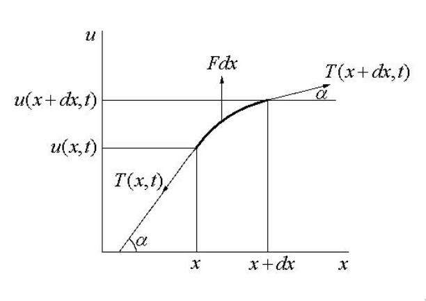

Равенство вида
\[
F\paren{x, \dots, \frac{\partial^k u}{\partial x_1^{i_1} \dots \partial x_n^{i_n}}, \dots} = 0
\]
называется дифференциальным уравнением в частных производных (ДУЧП) порядка $m$
относительно функции $u \in C(D)$.
Определение: регулярное решение ДУЧП
Функция
\[
u: D \to \mathbb{R}, \quad u \in C^m(D),
\]
обращающая ДУЧП в тождество, называется
регулярным решением.
Определение: фундаментальное решение ДУЧП
Решение $u(x) \in C^m(D)$, теряющее свойство регулярности в изолированных точках,
линиях, поверхностях или многообразиях особого рода, называется
фундаментальным решением.
Определение: линейное ДУЧП
Дифференциальное уравнение
\[
F\paren{x, \dots, \frac{\partial^k u}{\partial x_1^{i_1} \dots \partial x_n^{i_n}}, \dots} = 0
\]
называется линейным, если $F$ — линейная функция относительно всех своих переменных.
Обозначение: $\mathrm{L} u = f$, где $\mathrm{L}$ — линейный дифференциальный оператор,
$f$ — неоднородность.
Определение: квазилинейное ДУЧП
Дифференциальное уравнение
\[
F\paren{x, \dots, \frac{\partial^k u}{\partial x_1^{i_1} \dots \partial x_n^{i_n}}, \dots} = 0
\]
называется квазилинейным, если $F$ — линейная функция относительно старших
производных, то есть относительно переменных
$p_{i_1 \dots i_n}$, у которых $\sum\limits_{j=1}^n i_j = m$.
Общий вид линейного ДУЧП 2-го порядка
\[
\sum_{j,k=1}^n A_{jk}(x) \ppdv{u}{x_j}{x_k} +
\sum_{j=1}^n B_j(x) \pd{u}{x_j} + C(x) u = f(x),
\]
где $A_{jk}, B_j, C, f$ — заданные в $D$ вещественные функции.
Сокращенная форма записи:
\[
A_{\alpha \beta}(x) \ppdv{u}{x_\alpha}{x_\beta} +
B_\alpha(x) \pd{u}{x_\alpha} + C(x) u = f(x), \quad \alpha,\beta = \overline{1,n}.
\]
Лемма о симметричности матрицы коэффициентов линейного ДУЧП 2-го порядка
Матрица коэффициентов $A$ линейного ДУЧП 2-го порядка
\[
A_{\alpha \beta}(x) \ppdv{u}{x_\alpha}{x_\beta} +
B_\alpha(x) \pd{u}{x_\alpha} + C(x) u = f(x), \quad \alpha,\beta = \overline{1,n}.
\]
симметрична.
$u(x,t)$ — отклонение точки $x$ в момент времени $t$ от положения равновесия.
Определение: струна
Струна — упругая нить, не сопротивляющаяся изгибу.
Вывод уравнения малых поперечных колебаний струны
Малые колебания струны характеризуются условием
\[
\abs{\tg \alpha} = \abs{\pd{u}{x}} \ll 1,
\]
где $u = u(x,t)$ — уравнение положения струны в момент времени $t$.

Из определения струны следует, что натяжение струны $T(x,t)$ в точке $x$ в момент времени $t$
направлено по касательной. Кроме того, любой участок струны $(a,b)$ при малом отклонении от
прямолинейного положения равновесия практически сохраняет свою длину:
\[
\int\limits_a^b \sqrt{1 + \paren{\pd{u}{x}}^2} dx \approx \int\limits_a^b dx = b - a = l_0.
\]
В момент времени $t$ натяжение струны можно представить в виде
\[
T = T_0 + T_1,
\]
где $T_0$ — натяжение струны в начальный момент времени $t = 0$, а $T_1$ —
дополнительное усилие в результате отклонения струны от положения равновесия.
По закону Гука
\[
T_1 = E \frac{\Delta l}{l_0} S, \quad \text{где } \Delta l = l - l_0.
\]
Полагая, что
\[
E \abs{\frac{\Delta l}{l_0}} S \ll T_0, \quad \text{ или, иначе, } \quad
\abs{\frac{\Delta l}{l_0}} \ll \frac{T_0}{ES},
\]
получаем
\[
\abs{T} \approx T_0 = \const.
\]
Пусть $F(x,t)$ — плотность внешних сил в точке $x$ в момент времени $t$, направленных
перпендикулярно оси $x$, а $\rho(x)$ — линейная плотность в точке $x$, то есть
$\rho dx$ — масса элемента $dx$.
Согласно закону Ньютона, проецируя все силы на вертикальную ось, получим
\[
\at{T \sin\alpha}{x + dx} - \at{T \sin\alpha}{x} + F(x,t) dx = \rho(x) dx \pdv2{u}{t}.
\]
Так как при малых $\alpha$
\[
\sin\alpha \sim \alpha \sim \tg\alpha \sim \pd{u}{x}, \qquad \abs{T} \approx T_0,
\]
то
\[
\rho \pdv2{u}{t} - T_0 \frac{1}{dx} \paren{\pd{u(x + dx, t)}{x} - \pd{u(x,t)}{x}} = F(x, t).
\]
При $dx \to 0$ приходим к уравнению вынужденных малых поперечных колебаний струны:
\[
\rho \pdv2{u}{t} - T_0 \pdv2{u}{x} = F(x,t).
\]
Уравнение вынужденных малых поперечных колебаний струны
\[
\rho \pdv2{u}{t} - T_0 \pdv2{u}{x} = F(x,t),
\]
где
$\rho(x)$ — линейная плотность струны;
$T_0$ — сила натяжения струны в момент времени $t = 0$;
$F(x,t)$ — плотность внешних сил в точке $x$ в момент времени $t$.
$T_0$ — сила натяжения струны в момент времени $t = 0$;
$F(x,t)$ — плотность внешних сил в точке $x$ в момент времени $t$.
Уравнение малых свободных колебаний струны
Получается из одномерного волнового уравнения при отсутствии внешних возмущений, то есть при
$F(x,t) = 0$:
\[
\pdv2{u}{t} = a^2 \pdv2{u}{x},
\quad a = \sqrt{\frac{T_0}{\rho}},
\]
где $\rho = \const$ — линейная плотность струны, $T_0$ — сила натяжения.
Двумерное волновое уравнение
\[
\pdv2{u}{t} = a^2 \paren{\pdv2{u}{x_1} + \pdv2{u}{x_2}} + f(x,t),
\quad a = \sqrt{\frac{T_0}{\rho}},
\quad f(x,t) = \frac{F(x,t)}{\rho}
\]
где $\rho = \const$ — линейная плотность струны, $T_0$ — сила натяжения,
$F(x,t)$ — плотность внешнего возмущения.
Трёхмерное волновое уравнение
\[
\pdv2{u}{t} = a^2 \paren{\pdv2{u}{x_1} + \pdv2{u}{x_2} + \pdv2{u}{x_3}} + f(x,t),
\quad a = \sqrt{\frac{T_0}{\rho}},
\quad f(x,t) = \frac{F(x,t)}{\rho}
\]
где $\rho = \const$ — линейная плотность струны, $T_0$ — сила натяжения,
$F(x,t)$ — плотность внешнего возмущения.
В направлении вектора нормали $\textbf{n}$ к поверхности $S$ поток тепла в единицу времени
$dt$ через элемент поверхности $dS$ равен
\[
dQ = -k \pd{u}{n} dS dt
\]
Определение: изотропность среды
Среда называется изотропной, если её физические свойства не зависят от направления.
Пусть $c(x)$ — удельная теплоёмкость среды, $k(x)$ — коэффициент теплопроводности.
Если $c = \const$ и $k = \const$, то среда изотропна.
$V \subset \mathbb{R}^3$ — область, $S = \partial V$.
$u(x,t)$ — температура среды в точке $x \in V$ в момент времени $t$.
Среда изотропна:
(нужно ли? Вроде можно и без этого условия обойтись)
$\rho = \const$ — плотность;
$c = \const$ — удельная теплоёмкость;
$k = \const$ — коэффициент теплопроводности.
$F(x,t)$ — интенсивность источников тепла в точке $x$ в момент времени $t$,
то есть количество тепла, поглощаемого или выделяемого в единицу времени в единице объёма.
Пусть за промежуток времени $(t_1, t_2)$
$Q_1$ — количество поступившего через $S$ в $V$ количество тепла;
$Q_2$ — количество выделенного в $V$ внешними источниками тепла;
$Q_3$ — суммарное изменение количества тепла в $V$.
В результате поступления тепла $Q_3$ за достаточно малый промежуток времени $(t_1, t_2)$
приращение температуры равно
\[
du = u(x, t + dt) - u(x, t) \approx \pd{u}{t} dt,
\]
поэтому
\[
dQ_3 = c \, dm \, du \approx c \rho dV \pd{u}{t} dt,
\]
или
\[
Q_3 = \int\limits_{t_1}^{t_2} dt \iiint\limits_V c \rho \pd{u}{t} dV.
\]
Так как $k > 0$, то из закона Фурье
\[
dQ_1 = -k \pd{u}{n} dS dt
\]
следует, что при росте температуры в направлении вектора $\vb{n}$ (то есть $\pd{u}{n} > 0$)
за промежуток времени $(t_1, t_2)$ поток тепла имеет противоположное направление
($dQ_1 < 0$).
Пусть $\vb{n}$ — внешняя нормаль к $S$, тогда по закону Фурье через $S$ в $V$ за
промежуток времени $(t_1, t_2)$ поступает количество тепла
\[
Q_1 = \int\limits_{t_1}^{t_2} dt \iint\limits_S k \pd{u}{n} dS
= \int\limits_{t_1}^{t_2} dt \iint\limits_S \dp{k \nabla u}{\vb{n}} dS.
\]
В силу формулы Гаусса-Остроградского
\[
Q_1 = \int\limits_{t_1}^{t_2} dt \iiint\limits_V \dp{\nabla}{(k \nabla u)} dV.
\]
Кроме того, внешние источники за время $dt$ выделяют количество тепла
\[
Q_2 = \int\limits_{t_1}^{t_2} dt \iiint\limits_V F(x,t) dV.
\]
Составляя баланс тепла, получаем
\[
Q_3 = Q_1 + Q_2, \qquad Q_3 - Q_1 - Q_2 = 0,
\]
или
\[
\int\limits_{t_1}^{t_2} dt \iiint\limits_V
\paren{c \rho \pd{u}{t} - \dp{\nabla}{k \nabla u} - F(x,t)} dV = 0,
\]
откуда, в силу произвольности промежутка времени $(t_1, t_2)$ и области $V$, заключаем, что
\[
c \rho \pd{u}{t} - \dp{\nabla}{k \nabla u} - F(x,t) = 0.
\]
Это — уравнение теплопроводности.
Я не уверен, но, кажется, можно сюда добавить характеристику поглощения среды $q = q(x)$;
тогда, обозначив количество поглощённого средой тепла за промежуток времени $(t_1, t_2)$ как
$Q_4$, можно записать
\[
Q_4 = \int\limits_{t_1}^{t_2} dt \iiint\limits_V q(x) u(x,t) dV,
\]
а суммарное изменение количества тепла запишется как
\[
Q_3 = Q_1 + Q_2 - Q_4.
\]
Уравнение теплопроводности для неоднородной среды
$u = u(x,t)$ — температура среды в точке $x$ в момент времени $t$;
$\rho = \rho(x)$ — плотность среды;
$c = c(x)$ — удельная теплоёмкость среды;
$k = k(x)$ — коэффициент теплопроводности среды;
$F(x,t)$ — интенсивность внешних источников тепла.
В направлении вектора нормали $\vb{n}$ к поверхности $S$ поток частиц за единицу времени $dt$
через элемент поверхности $dS$ равен
\[
dQ = -D \pd{u}{n} dS dt,
\]
где
$u(x,t)$ — плотность частиц в точке $x$ в момент времени $t$,
Пусть в точке $x$ матрица $A$ имеет $\alpha$ положительных, $\beta$ отрицательных и
$\gamma$ нулевых характеристических чисел. Тогда говорят, что в рассматриваемой точке
$x$ линейное уравнение принадлежит к типу $(\alpha, \, \beta, \, \gamma)$.
Изменение знака не меняет типа квазилинейного уравнения, поэтому тип $(\alpha, \beta, \gamma)$
равносилен типу $(\beta, \alpha, \gamma)$.
Определение: гиперболический, параболический и эллиптический тип квазилинейных ДУЧП 2-го порядка
$(\alpha, \beta, \gamma)$ — матрица $A$ квазилинейного ДУЧП 2-го порядка
имеет $\alpha$ положительных, $\beta$ отрицательных и $\gamma$ нулевых собственных чисел.
$(n-1, 1, 0)$ или $(1, n-1, 0)$ — гиперболический тип.
получается как из волнового уравнения, так и из уравнения теплопроводности
в случае стационарного процесса.
Уравнение Пуассона
\[
\Delta u = -f.
\]
Матрица $A$ уравнения Пуассона имеет вид
\[
A = \left(
\begin{array}{cccc}
1 & 0 & \dots & 0 \\
0 & 1 & \dots & 0 \\
\dots & \dots & \dots & \dots \\
0 & 0 & \dots & 1
\end{array}
\right);
\]
её характеристический многочлен
\[
p(\lambda) = \det \paren{A - \lambda I} = (1 - \lambda)^n
\]
имеет $n$ положительных корней $\lambda = 1$, то есть тип уравнения — $(n, 0, 0)$.
Определение: квазилинейное ДУЧП смешанного типа
Квазилинейные ДУЧП, меняющие тип в зависимости от $x$, называются уравнениями
смешанного типа.
БИЛЕТ 4
Определение: краевое условие
Область $\Omega \subset \mathbb{R}^n$ с границей $\Gamma = \partial\Omega$.
Линейное ДУЧП $\mathrm{L} u = f(x)$, где $x \in \Omega$.
Равенства
\[
G_k \at{u}{\Gamma} = \varphi_k(x), \quad k = \overline{1,l}, \quad x \in \Gamma,
\]
где $G_k$ — дифференциальные операторы, называются краевыми условиями.
Задача об интегрировании ДУЧП
\[
\mathrm{L} u = f(x), \quad x \in \Omega
\]
при условиях
\[
G_k \at{u}{\Gamma} = \varphi_k(x), \quad k = \overline{1,l}, \quad x \in \Gamma,
\]
называется краевой задачей.
Пример краевой задачи: колебание струны конечной длины
Рассмотрим уравнение колебания струны
\[
\pdv2{u}{t} - a^2 \pdv2{u}{x} = f(x,t).
\]
Функцию $u(x,t)$ будем искать в области $D: \set{x \in (0,l), \; t > 0}$
У бесконечной струны граничные условия отсутствуют.
Можно показать, что при достаточно слабых ограничениях на данные исходное волновое уравнение
имеет одно и только одно решение, удовлетворяющее начальным и граничным условиям. Иными словами,
данная краевая задача содержит всю информацию, необходимую для исследования явления колебания
струны (решение единственно) и не содержит избыточной, противоречивой информации
(решение существует).
Пусть ищем решение $u \in C^2(D) \cap C(\overline{D})$. Тогда из непрерывности $u$ на границе
$\partial D$ следуют условия
\[
\begin{aligned}
\varphi_1(0) &= \psi_1(0), &&(t = 0, x = 0), \\
\varphi_1(l) &= \psi_2(0), &&(t = 0, x = l).
\end{aligned}
\]
Из условия непрерывности частных производных ${\displaystyle \pd{u}{t}, \pd{u}{x}}$
на границе $\partial D$ следуют условия
\[
\begin{aligned}
\varphi_2(0) &= \psi_1'(0), &&(t = 0, x = 0), \\
\varphi_2(l) &= \psi_2'(0), &&(t = 0, x = l).
\end{aligned}
\]
Из непрерывности частных производных ${\displaystyle \pdv2{u}{t}, \pdv2{u}{x}}$
на границе $\partial D$ следуют условия
\[
\begin{aligned}
\psi_1''(0) - a^2 \varphi_1''(0) &= f(0, 0), \\
\psi_2''(0) - a^2 \varphi_1''(l) &= f(l, 0).
\end{aligned}
\]
Разве вторые частные производные непрерывны на границе? Мы же ищем функцию в классе
$C^2(D) \cap C(\overline{D})$, то есть мы явно требуем только их непрерывности
непосредственно в области $D$, но не на границе.
Задача Дирихле для уравнения Пуассона
Тело занимает область $\Omega \subset \mathbb{R}^3$ с границей $\Gamma = \partial \Omega$.
В теле установилось стационарное распределение температур.
Возможно измерить температуру на границе:
\[
\at{u}{\Gamma} = \varphi(x), \quad x \in \Gamma.
\]
Случай неоднородной и анизотропной среды.
Стационарное распределение температур под действием внешних источников тепла интенсивности
$F(x)$ описывается уравнением эллиптического типа:
\[
\sum_{j,k=1}^3 \pd{}{x_j} \paren{A_{jk}(x) \pd{u}{x_k}} = f(x),
\]
где $f(x)$ отличается от $F(x)$ некоторым постоянным множителем.
Задача интегрирования
\[
\sum_{j,k=1}^3 \pd{}{x_j} \paren{A_{jk}(x) \pd{u}{x_k}} = f(x),
\]
при граничных условиях
\[
\at{u}{\Gamma} = \varphi(x), \quad x \in \Gamma.
\]
называется задачей Дирихле в случае неоднородной и анизотропной среды.
Случай неоднородной и изотропной среды при $A_{jk} = \delta_{jk}$:
\[
\Delta u = f(x) \quad \text{при} \quad \at{u}{\Gamma} = \varphi(x), \quad x \in \Gamma.
\]
Задача Неймана для уравнения Пуассона
Тело занимает область $\Omega \subset \mathbb{R}^3$ с границей $\Gamma = \partial \Omega$.
В теле установилось стационарное распределение температур.
Известен тепловой поток через границу:
\[
\sum_{j,k=1}^3 \at{A_{jk}(x) \pd{u}{x_k} \cos(\vb{n},x_i)}{\Gamma} = \psi(x),
\]
причём $\psi(x)$ с точностью до константы совпадает с интенсивностью потока тепла
в точке $x \in \Gamma$, а $\vb{n}$ — внешняя нормаль.
Случай неоднородной и анизотропной среды.
Стационарное распределение температур под действием внешних источников тепла
интенсивности $F(x)$ описывается уравнением эллиптического типа:
\[
\sum_{j,k=1}^3 \pd{}{x_j} \paren{A_{jk}(x) \pd{u}{x_k}} = f(x),
\]
где $f(x)$ отличается от $F(x)$ некоторым постоянным множителем.
Задача интегрирования
\[
\sum_{j,k=1}^3 \pd{}{x_j} \paren{A_{jk}(x) \pd{u}{x_k}} = f(x),
\]
при граничных условиях
\[
\sum_{j,k=1}^3 \at{A_{jk}(x) \pd{u}{x_k} \cos(\vb{n},x_i)}{\Gamma} = \psi(x),
\]
называется задачей Неймана в случае неоднородной и анизотропной среды.
Случай неоднородной и изотропной среды при $A_{jk} = \delta_{jk}$.
Граничное условие
\[
\sum_{j,k=1}^3 \at{A_{jk}(x) \pd{u}{x_k} \cos(\vb{n},x_i)}{\Gamma} = \psi(x)
\]
при $A_{jk} = \delta_{jk}$ можно переписать в виде
\[
\at{\pd{u}{\vb{n}}}{\Gamma} = \psi(x).
\]
Тогда задачу Неймана можно записать так:
\[
\Delta u = f(x) \quad \text{при} \quad \at{\pd{u}{\vb{n}}}{\Gamma} = \psi(x).
\]
БИЛЕТ 5
Постановка задачи Коши для линейного уравнения 2-го порядка
Рассмотрим линейное уравнение второго порядка:
\[
\sum_{k,j=1}^n A_{jk} \ppdv{u}{x_j}{x_k} + \sum_{j=1}^n B_j \pd{u}{x_j} + Cu = f(x).
\]
Пусть $\Gamma \subset \mathbb{R}^n$. С каждой точкой $x \in \Gamma$ свяжем
направление $\lambda$, некасательное к $\Gamma$.
Постановка задачи Коши: в окрестности $\Gamma$ требуется найти решение линейного ДУЧП,
удовлетворяющее условиям Коши
\[
\at{u}{\Gamma} = \varphi_1(x), \quad \at{\pd{u}{\lambda}}{\Gamma} = \varphi_2(x),
\]
где $\varphi_1(x) \in C^2(\Gamma), \; \varphi_2(x) \in C^1(\Gamma)$ называются
данными Коши, а $\Gamma$ — поверхностью Коши.
Вычисление первых производных на поверхности Коши
Зная условия Коши
\[
\at{u}{\Gamma} = \varphi_1(x), \quad \at{\pd{u}{\lambda}}{\Gamma} = \varphi_2(x),
\]
можно найти значения всех первых производных искомой функции $u$ на $\Gamma$.
Введём в точке $x \in \Gamma$ местную систему координат так, чтобы координатные оси
$\xi_1, \dots, \xi_{n-1}$ лежали в $(n-1)$-мерной плоскости $\alpha_{n-1}$, касательной
к $\Gamma$ в этой точке, а $\xi_n$ — на нормали.
Так как $\at{u}{\Gamma} = \varphi_1(x)$, то
\[
\at{\pd{u}{\xi_k}}{\Gamma} = \pd{\varphi_1}{\xi_k}, \quad k = \overline{1,n-1}.
\]
Теперь, зная все частные производные первого порядка в системе координат $\xi$, в любой
другой системе координат $x$ справедливо
\[
\at{\pd{u}{x_k}}{\Gamma} = \sum_{j=1}^n \at{\pd{u}{\xi_j}}{\Gamma} \cos(\xi_j, x_k),
\quad k = \overline{1,n}.
\]
БИЛЕТ 6
Определение: полное пространство
Пространство называется полным, если любая фундаментальная последовательность
сходится в нём.
Определение: банахово пространство
Полное нормированное векторное пространство называется банаховым.
Определение: гильбертово пространство
Полное унитарное векторное пространство называется гильбертовым.
Всякое гильбертово пространство является банаховым. Обратное неверно.
Определение: оператор краевой задачи
Обычно искомую функцию краевой задачи подчиняют некоторым ограничениям общего характера, чтобы
дать возможность рассматривать функцию как элемент функционального пространства $B_1$.
Ставя задачу Дирихле для уравнения Лапласа, можно потребовать, чтобы искомая функция
была непрерывна в замкнутой области $\overline{\Omega} = \Omega \cup \partial\Omega$.
В этом случае $B_1 = C(\overline{\Omega})$.
Интегралы
\[
\int\limits_\Omega u^2 dx, \qquad \int\limits_\Omega (\nabla u)^2 dx
\]
конечны. В этом случае можно рассматривать искомую функцию как элемент такого
Гильбертова пространства, в котором введена норма
\[
\norm{u}^2 = \int\limits_\Omega \paren{u^2 + (\nabla u)^2} d\Omega.
\]
Ограничения, накладываемые на искомую функцию $u(x)$, вынуждают накладывать ограничения
и на заданные функции, входящие в правые части ДУЧП и краевых условий. Их можно
рассматривать как элементы некоторого другого функционального пространства $B_2$.
Если заданы $B_1$ и $B_2$, то можно ввести линейный оператор
\[
\mathrm{U} : B_1 \to B_2,
\]
используя который можно записать краевую задачу в виде
\[
\mathrm{U} u = \Phi, \quad u \in B_1, \quad \Phi \in B_2.
\]
Линейный оператор $\mathrm{U} : B_1 \to B_2$ называется оператором данной краевой
задачи.
Определение: корректная краевая задача в паре банаховых пространств
$B_1, \, B_2$ — банаховы пространства.
Краевая задача
\[
\mathrm{U} u = \Phi, \quad u \in B_1, \quad \Phi \in B_2
\]
называется корректной в паре банаховых пространств $(B_1, B_2)$,
если
решение краевой задачи единственно в $B_1$;
решение существует при любых данных из $B_2$;
достаточно малому изменению данных в норме $B_2$ соответствует
сколь угодно малое изменение в норме $B_1$.
Определение: ограниченный линейный оператор
$M, N$ — линейные нормированные пространства с нормами
$\norm{\cdot}_M$ и $\norm{\cdot}_N$.
Линейный оператор
\[
\mathrm{L} : M \to N
\]
называется ограниченным из $M$ в $N$, если существует такое число $C > 0$, что
для любого $f \in M$ справедливо неравенство
\[
\norm{\mathrm{L} f}_N \leqslant C \norm{f}_M.
\]
Теорема о корректности краевой задачи (без доказательства)
Для того чтобы краевая задача
\[
\mathrm{U} u = \Phi, \quad u \in B_1, \quad \Phi \in B_2
\]
была корректна в паре банаховых пространств $(B_1, B_2)$, необходимо и достаточно,
чтобы существовал ограниченный оператор
\[
\mathrm{R} = \mathrm{U}^{-1} : B_2 \to B_1
\]
с областью определения $D(\mathrm{R}) = B_2$.
Будем искать решение в полосе $0 < y < \delta, \; \delta> 0$:
\[
\Omega = \set{(x,y): x \in \mathbb{R}, \; y \in (0, \delta)};
\]
в качестве $\lambda$ взято направление $y$.
Совокупность данных — единственная функция $\varphi(x)$:
\[
B_2 := \varphi(x) \in C(\mathbb{R}), \quad \abs{\varphi(x)} \lt \infty;
\]
$B_1 := C(\Omega)$ — пространство функций, непрерывных и ограниченных в $\Omega$.
За область определения оператора краевой задачи примем множество функций $u(x,y) \in C(\Omega)$,
имеющих непрерывные вторые производные и удовлетворяющие условию
\[
\at{\pd{u}{y}}{y=0} = 0.
\]
Доказать единственность решения этой задачи.
Из единственности решения этой задачи следует, что функции $\varphi(x) \equiv 0$
соответствует решение $u(x,y) \equiv 0$.
Рассмотрим теперь изменённые условия Коши
\[
\at{u}{y=0} = \frac{\cos nx}{n}, \quad \at{\pd{u}{y}}{y=0} = 0, \quad n \in \mathbb{N}.
\]
Решением задачи является функция
\[
u(x,y) = \frac{\cos nx \, \ch ny}{n}.
\]
Изменение в норме $B_2$ мало:
\[
\norm{\varphi}_{B_2} = \norm{\frac{\cos nx}{n}}_{B_2} =
\max_{x \in \mathbb{R}} \abs{\frac{\cos nx}{n}} = \frac{1}{n}
\underset{n \to \infty}{\longrightarrow} 0.
\]
В то же время
\[
\norm{u}_{B_1} =
\max_{(x,y) \in \Omega} \abs{\frac{\cos nx \, \ch ny}{n}} = \frac{\ch n\delta}{n}
\underset{n \to \infty}{\longrightarrow} \infty,
\]
следовательно, сколь угодно малые по норме $B_2$ изменения данных могут вызвать
сколь угодно большие по норме $B_1$ изменения решения.
Пример некорректной краевой задачи для гиперболического
уравнения (задача Дирихле в квадрате)
Рассмотрим уравнение:
\[
\ppdv{u}{x_1}{x_2} = 0;
\]
оно гиперболическое.
Из первых двух условий краевой задачи следует:
\[
\begin{cases}
F_1(0) + F_2(x_2) = \varphi_1(x_2), \\
F_1(x_1) + F_2(0) = \psi_1(x_1)
\end{cases}
\implies
\begin{cases}
F_2(x_2) = \varphi_1(x_2) - F_1(0), \\
F_1(x_1) = \psi_1(x_1) - F_2(0)
\end{cases}
\]
причём одна из постоянных $F_1(0)$ и $F_2(0)$ остаётся произвольной.
Тогда
\[
u(x_1, x_2) = \varphi_1(x_2) + \psi_1(x_1) + A, \quad A = \const.
\]
Так как $u(0, 0) = \varphi_1(0)$, то $A = -\psi_1(0)$.
Из первого условия краевой задачи
\[
u(0, x_2) = \varphi_1(x_2), \implies u(0, 0) = \varphi_1(0),
\]
поэтому
\[
\varphi_1(0) = u(0, 0) = \varphi_1(0) + \psi_1(0) + A,
\]
откуда и следует $A = -\psi_1(0)$.
Таким образом,
\[
u(x_1, x_2) = \varphi_1(x_2) + \psi_1(x_1) - \psi_1(0).
\]
Но для выполнения, например, 4-го условия краевой задачи
\[
\at{u}{x_2=1} = \psi_2(x_1)
\]
требуется, чтобы
\[
u(1,1) = \varphi_1(1) + \psi_1(1) - \psi_1(0) = \varphi_2(1),
\]
что в общем случае не выполняется. Отсюда сразу можно сделать вывод,
что постановка задачи некорректна в паре $(B_1, B_2)$.
Дальше в конспекте Грекова идут рассуждения при $F_2(0) = 0$, из чего
небезосновательно можно сделать вывод, что всё, что было выше, относится к случаю
$F_1(0) = 0$. Эту гипотезу необходимо формально проверить.
Преобразование
\[
\xi_r = \xi_r(x_1, \dots, x_n), \quad r = \overline{1,n}
\]
называется независимым в некоторой области изменения точки $x$,
если в ней оно взаимно однозначно, т.е. его якобиан не равен нулю.
Теорема о сохранении типа квазилинейного ДУЧП при
невырожденном преобразовании независимых переменных
Тип квазилинейного ДУЧП
\[
A_{\alpha \beta} \ppdv{u}{x_\alpha}{x_\beta}
+ \Phi \paren{x, u, \pd{u}{x_1}, \dots, \pd{u}{x_n}} = 0,
\quad \alpha,\beta = \overline{1,n},
\]
не меняется при невырожденном преобразовании независимых
переменных
\[
\xi_r = \xi_r(x_1, \dots, x_n), \quad r = \overline{1,n}.
\]
Найдём вид уравнения, полученного из исходного невырожденным
преобразованием.
Пусть все $\xi_r$ имеют непрерывные вторые производные. Тогда
\[
\begin{gathered}
\pd{u}{x_\beta} = \pd{u}{\xi_\gamma} \pd{\xi_\gamma}{x_\beta}, \\
\ppdv{u}{x_\alpha}{x_\beta} = \pd{}{x_\alpha}
\paren{\pd{u}{\xi_\gamma} \pd{\xi_\gamma}{x_\beta}}
= \ppdv{u}{\xi_\mu}{\xi_\gamma} \pd{\xi_\mu}{x_\alpha}
\pd{\xi_\gamma}{x_\beta} + \pd{u}{\xi_\gamma}
\ppdv{\xi_\gamma}{x_\alpha}{x_\beta},
\end{gathered}
\]
где $\mu, \gamma = \overline{1,n}$. Квазилинейное уравнение тогда
запишется в виде
\[
A_{\alpha \beta} \pd{\xi_\gamma}{x_\beta} \pd{\xi_\mu}{x_\alpha}
\ppdv{u}{\xi_\gamma}{\xi_\mu}
+
A_{\alpha \beta} \pd{u}{\xi_\gamma} \ppdv{\xi_\gamma}{x_\alpha}{x_\beta}
+ \Phi = 0.
\]
Введём обозначения:
\[
\begin{gathered}
\widetilde{A}_{\gamma \mu} := A_{\alpha \beta} \pd{\xi_\gamma}{x_\beta}
\pd{\xi_\mu}{x_\alpha}, \quad
\Phi_1 := \Phi + A_{\alpha \beta} \ppdv{\xi_\gamma}{x_\alpha}{x_\beta}
\pd{u}{\xi_\gamma},
\end{gathered}
\]
тогда исходное уравнение примет вид
\[
\widetilde{A}_{\gamma \mu} \ppdv{u}{\xi_\gamma}{\xi_\mu}
+ \Phi_1 \paren{\xi_1, \dots, \xi_n, u, \pd{u}{\xi_1}, \dots, \pd{u}{\xi_n}} = 0.
\]
Матрица $\widetilde{A}_{\gamma \mu}$ симметрична.
\[
\widetilde{A}_{\gamma \mu} = A_{\alpha \beta}
\pd{\xi_\gamma}{x_\beta} \pd{\xi_\mu}{x_\alpha}
= A_{\beta \alpha} \pd{\xi_\mu}{x_\alpha} \pd{\xi_\gamma}{x_\beta}.
\]
В последней сумме поменяем местами $\alpha$ и $\beta$:
\[
\widetilde{A}_{\gamma \mu} = A_{\alpha \beta}
\pd{\xi_\mu}{x_\beta} \pd{\xi_\gamma}{x_\alpha} =
\widetilde{A}_{\mu \gamma}, \overset{\bydef}{\implies}
\mbox{матрица $\widetilde{A}$ симметрична}.
\]
Из симметричности матрицы $\widetilde{A}$ следует, что квазилинейное
ДУЧП после невырожденного преобразования остаётся квазилинейным ДУЧП.
Остаётся проверить тип полученного ДУЧП.
Пусть $J$ — матрица Якоби преобразования $\xi$; оно невырожденное,
то есть $\det J \neq 0$, откуда следует существование обратной матрицы
$J^{-1}$. Тогда
\[
\widetilde{A} = J A J^T.
\]
Пусть невырожденное линейное преобразование с матрицей $\Sigma$
преобразовывает матрицу $A$ в диагональную матрицу $D$, то есть
\[
A = \Sigma D \Sigma^T.
\]
Тогда
\[
\widetilde{A} = J \Sigma D \Sigma^T J^T = (J \Sigma) D (J \Sigma)^T,
\]
то есть матрица $\widetilde{A}$ сводится невырожденным преобразованием
с матрицей $J\Sigma$ к той же диагональной матрице $D$,
поэтому количество положительных, отрицательных и нулевых собственных
чисел матриц $A$ и $\widetilde{A}$ совпадают.
Тогда если преобразование (невырожденное?)
\[
\xi_\gamma = \xi_\gamma(x_1, \dots, x_n), \quad \gamma = \overline{1,n}
\]
переводит функцию $\omega(x)$ в функцию
$\widetilde{\omega}(\xi_1(x), \dots, \xi_n(x))$, то функция $\widetilde{\omega}$
является решением уравнения
\[
\widetilde{A}_{\alpha \beta} \pd{\widetilde{\omega}}{\xi_\alpha}
\pd{\widetilde{\omega}}{\xi_\beta} = 0,
\]
то есть является характеристикой преобразованного квазилинейного ДУЧП.
Имеют ли уравнения эллиптического типа вещественные характеристики?
Нет, не имеют: у уравнений эллиптического типа характеристическая форма
\[
(At, t) = A_{\alpha \beta} t_\alpha t_\beta
\]
при вещественных $t_j$ обращается в нуль, если $t_j = 0$ для любых $j$, следовательно,
единственное уравнение характеристик
\[
A_{\alpha \beta} \pd{\omega}{x_\alpha} \pd{\omega}{x_\beta} = 0
\]
имеет единственное решение $\omega \equiv \const$, а, следовательно, уравнение
\[
\omega = C
\]
не определяет поверхность.
БИЛЕТ 9
Зависимость данных Коши на характеристической поверхности
Пусть данные Коши заданы на достаточно гладкой
поверхности $\Gamma$, определяемой уравнением
\[
\mu(x_1, \dots, x_n) = 0,
\]
и имеют вид
\[
\at{u}{\Gamma} = \varphi_0(x), \quad \at{\pd{u}{\lambda}}{\Gamma} = \varphi(x),
\]
где $\lambda$ — некасательное направление к $\Gamma$. Из данных Коши можно найти
все производные ${\displaystyle \pd{u}{x_j}}, \; j = \overline{1,n}$ на $\Gamma$.
Введём новую систему координат $\xi$: определим $\xi_1, \dots, \xi_{n-1}$ произвольно,
а $\xi_n := \mu$. Потребуем, чтобы преобразование
\[
\xi_r = \xi_r(x_1, \dots, x_n), \quad r = \overline{1,n}
\]
было невырожденно, а функции ${\displaystyle \pdv2{\xi_j}{x_k}}$ — непрерывны.
В новых координатах уравнение поверхность Коши имеет вид
\[
\xi_n = 0,
\]
то есть в новой системе координат $\Gamma$ — координатная поверхность.
Предположим теперь, что $\Gamma$ — характеристическая поверхность. Тогда $\mu$
удовлетворяет уравнению характеристик:
\[
A_{\alpha \beta} \pd{\mu}{x_\alpha} \pd{\mu}{x_\beta} = 0,
\]
или, в новых координатах,
\[
\widetilde{A}_{\gamma \nu} \pd{\widetilde{\mu}}{\xi_\gamma}
\pd{\widetilde{\mu}}{\xi_\nu} = 0,
\]
причём
\[
\widetilde{A}_{\gamma \nu} = A_{\alpha \beta} \pd{\xi_\gamma}{x_\beta}
\pd{\xi_\nu}{x_\alpha}.
\]
В силу равенства $\xi_n = \mu$ коэффициент при ${\displaystyle \pdv2{u}{\xi_n}}$ обращается
в нуль:
\[
\widetilde{A}_{nn} = A_{\alpha \beta} \pd{\xi}{x_\alpha} \pd{\xi_n}{x_\beta}
= A_{\alpha \beta} \pd{\mu}{x_\alpha} \pd{\mu}{x_\beta} = 0.
\]
Следовательно, преобразованное квазилинейное уравнение
\[
\widetilde{A}_{\gamma \nu} \ppdv{u}{\xi_\gamma}{\xi_\nu}
+ \Phi_1 \paren{\xi_1, \dots, \xi_n, u, \pd{u}{\xi_1}, \dots, \pd{u}{\xi_n}} = 0
\]
является дифференциальным уравнением первого порядка по отношению к производной по $\xi_n$.
Так как
${\displaystyle \at{u}{\Gamma} \text{ и } \at{\pd{u}{\xi_j}}{\Gamma}}$ находятся
из данных Коши;
${\displaystyle \at{\ppdv{u}{\xi_j}{\xi_k}}{\Gamma}}$ можно найти для любых $j,k$,
кроме $j=k=n$, то есть можно найти производные по направлениям, касательным к $\Gamma$,
то левая часть преобразованного квазилинейного уравнения вычисляются на поверхности Коши $\Gamma$
через заданные функции $\varphi_0, \varphi_1$. Подставляя найденные значения, заключаем, что
на характеристической поверхности некоторая заданная функция тождественно равна нулю.
Эта функция и является соотношением между данными Коши на характеристике.
Если соотношение нарушено, то задача Коши с данными на характеристике решения не имеет.
Если поверхность Коши не является характеристикой, то производная
${\displaystyle \pdv2{u}{\xi_n}}$ присутствует в преобразованном квазилинейном уравнении,
и на поверхности Коши её можно выразить через остальные производные, то есть через
данные Коши.
Пример зависимости данных Коши на характеристической поверхности
(уравнение теплопроводности)
Рассмотрим уравнение параболического типа
\[
\pd{u}{x_n} - \sum_{k=1}^{n-1} \pdv2{u}{x_k} = 0.
\]
Его характеристическое уравнение:
\[
-\sum_{k=1}^{n-1} \paren{\pd{\omega}{x_k}}^2 = 0;
\]
из него следует, что
\[
\pd{\omega}{x_k} = 0, \quad k = \overline{1, n-1},
\]
и, следовательно, характеристика представляется в виде
\[
\omega = f(x_n), \quad \text{где } f(x_n) \text{ — произвольная функция}.
\]
Решения уравнения характеристической поверхности $\Gamma$
\[
f(x_n) = \const
\]
имеют вид $x_n = \const$. Таким образом, характеристики параболического уравнения
являются плоскостями.
Пусть поверхность Коши есть плоскость
\[
x_n = 0,
\]
а условия Коши имеют вид
\[
\at{u}{x_n=0} = \varphi_0(x_1, \dots, x_{n-1}), \quad
\at{\pd{u}{x_n}}{x_n=0} = \varphi_1(x_1, \dots, x_{n-1}).
\]
Исходное уравнение
\[
\pd{u}{x_n} - \sum_{k=1}^{n-1} \pdv2{u}{x_k} = 0
\]
при $x_n = 0$ принимает вид
\[
\varphi_1 = \sum_{k=1}^{n-1} \pdv2{\varphi_0}{x_k}.
\]
Отсюда следует, что достаточно задать только первое из двух условий Коши:
\[
\at{u}{x_n=0} = \varphi_0(x_1, \dots, x_{n-1}).
\]
БИЛЕТ 10
Определение: слабый разрыв, фронт волны
Рассмотрим квазилинейное уравнение
\[
A_{\alpha \beta} \ppdv{u}{x_\alpha}{x_\beta} + \Phi\paren{x, u, \pd{u}{x_1}, \dots, \pd{u}{x_n}} = 0,
\quad \alpha, \beta = \overline{1,n}.
\]
Пусть данные Коши заданы на достаточно гладкой поверхности $\Gamma$, определяемой уравнением
\[
\mu(x_1, \dots, x_n) = 0.
\]
Говорят, что решение квазилинейного уравнения второго порядка имеет на поверхности $\mu(x_1, \dots, x_n) = 0$
слабый разрыв, если при переходе через эту поверхность это решение и его первые производные
непрерывны, а некоторые производные порядка выше первого терпят разрыв первого рода.
Обозначив $x_n = t$, поверхность запишется в виде
\[
\mu(x_1, \dots, x_{n-1}, t) = 0,
\]
откуда, выразив $t$, получим
\[
t = \nu(x_1, \dots, x_{n-1}).
\]
Поверхность $\nu(x_1, \dots, x_{n-1}) = \const$ в пространстве $\mathbb{R}^{n-1}$ называют фронтом
волны.
Скорость движения фронта волны:
\[
w=|\textbf{w}|=\lim_{\Delta t \to 0} \dfrac{\Delta n}{\Delta t} = \lim_{\Delta n \to 0} \dfrac{1}{\dfrac{\Delta
t}{\Delta n}}
= \lim_{\Delta n \to 0} \dfrac{1}{\dfrac{\Delta \nu}{\Delta n}} = \dfrac{1}{\dfrac{d \nu}{d
n}}=\dfrac{1}{|\Delta \nu|}
\]
Тогда вектор скорости движения фронта волны:
\[
\textbf{w}=\dfrac{\nabla \nu}{|\nabla \nu|^2}
\]
Приведение уравнений второго порядка к каноническому виду.
Рассмотрим линейное невырожденное преобразование $\xi_\alpha = j_{\alpha \beta} x_\beta, \;
\alpha,\beta=\overline{1,n}$
Матричная форма:
\[
\xi=Jx
\]
Можно выбрать $J$ так, чтобы
\[
\tilde{A}=JAJ^{T}, \; \tilde{A_{ij}}=\nu_j \delta_{ij}
\]
$\delta_{ij}$ - символ Кронекера. Короче, $\tilde{A}$ - диагональная
Тогда квазилинейное уравнение
\[
A_{\alpha \beta} \ppdv{u}{x_\alpha}{x_\beta}
+ \Phi \paren{x, u, \pd{u}{x_1}, \dots, \pd{u}{x_n}} = 0
\]
Сведется к каноническому виду
\[
\sum_{k=1}^n \nu_k \pdv2{u}{\xi_k}
+ \Phi_1 \paren{\xi, u, \pd{u}{\xi_1}, \dots, \pd{u}{\xi_n}} = 0
\]
$\nu_k = \tilde{A_{kk}}$
Приведение уравнений второго порядка к каноническому виду. Случай двух переменных.
Рассмотрим квазилинейное ДУЧП 2 порядка
\[
A\pdv2{u}{x}+2B\dfrac{\partial^2 u}{\partial x \partial y} + C\pdv2{u}{y} +
\Phi \left( x,y,u, \dfrac{\partial u}{\partial x}, \dfrac{\partial u}{\partial y} \right) = 0
\]
Найдем с.ч. - решения уравнения $\lambda^2 -(A+C)\lambda - B^2 + AC = 0\\$
По т. Виета,
\[
\lambda_1\cdot\lambda_2=AC-B^2 \Rightarrow
\]
имеем классификацию ДУЧП:
$\\$ Эллиптический тип $\\$
\[
AC-B^2 < 0 \Leftrightarrow \lambda_1\cdot\lambda_2> 0
\]
Канонический вид эллиптического ДУЧП 2 порядка в случае двух переменных:
\[
\pdv2{u}{\xi}+\pdv2{u}{\eta}+\Phi_1 \left(\xi,\eta,u, \dfrac{\partial u}{\partial \xi}, \dfrac{\partial
u}{\partial \eta} \right)=0
\]
$\\$ Гиперболический тип $\\$
\[
AC-B^2 > 0 \Leftrightarrow \lambda_1\cdot\lambda_2 < 0 \] Канонический вид гиперболического ДУЧП 2 порядка в
случае двух переменных: \[ \pdv2{u}{\xi_1}-\pdv2{u}{\eta_1}+\Phi_3 \left(\xi_1,\eta_1,u, \dfrac{\partial
u}{\partial \xi_1}, \dfrac{\partial u}{\partial \eta_1} \right)=0 \] или \[ \dfrac{\partial^2 u}{\partial
\xi \partial\eta}+\Phi_3 \left(\xi,\eta,u, \dfrac{\partial u}{\partial \xi}, \dfrac{\partial u}{\partial
\eta} \right)=0 \] $\\$ Параболический тип $\\$
\[
AC-B^2 = 0 \Leftrightarrow \lambda_1\cdot\lambda_2 = 0
\]
Канонический вид параболического ДУЧП 2 порядка в случае двух переменных:
\[
\pdv2{u}{\eta}+\Phi_2 \left(\xi,\eta,u, \dfrac{\partial u}{\partial \xi}, \dfrac{\partial u}{\partial \eta}
\right)=0
\]
Сведение ур-я характеристик к ОДУ
Рассмотрим уравнение характеристик для ДУЧП 2 порядка:
\[
A \left( \dfrac{\partial w}{\partial x} \right)^2 +
2B \dfrac{\partial w}{\partial x} \dfrac{\partial w}{\partial y} +
C \left( \dfrac{\partial w}{\partial y} \right)^2 = 0
\]
Оно сводится к ОДУ, так как $\dfrac{\partial w}{\partial x} / \dfrac{\partial w}{\partial y} = -dy/dx$
\[
Ady^2-2Bdxdy+Cdx^2
\]
Вектор $(dx,dy)$ - характеристическое направление.
Пример уравнения гиперболического типа
Рассмотрим ДУЧП 2 порядка
\[
\pdv2{u}{x}-2\sin x \dfrac{\partial^2 u}{\partial x \partial y} -
\cos^2 x \pdv2{u}{y} - \cos x \dfrac{\partial u}{\partial y} = 0
\]
Ур. характеристик:
\[
\left( \dfrac{\partial w}{\partial x} \right)^2 -
2\sin x \dfrac{\partial w}{\partial x} \dfrac{\partial w}{\partial y} -
\cos^2 x \left( \dfrac{\partial w}{\partial y} \right)^2 = 0
\]
Оно сводится к ОДУ:
\[
dy^2+2\sin x dxdy - \cos^2 x dx^2 = 0
\]
Его решения (то есть характеристики): $y\mp x -\cos x=const$
\[
\left\{\begin{aligned}
\xi=x+y-\cos x = \omega\\
\eta=x-y+\cos x = \omega
\end{aligned}\right.
\]
Подставляем в уравнения характеристик и имеем:
\[
\dfrac{\partial^2 u}{\partial\xi \partial\eta} = 0
\]
Теперь рассмотрим замену
\[
\left\{\begin{aligned}
\xi=\xi_1 + \eta_1\\
\eta=\xi_1 - \eta_1
\end{aligned}\right. \Rightarrow
\]
\[\Rightarrow
\left\{\begin{aligned}
\xi_1=\dfrac{1}{2} \left( \xi+\eta \right) \\
\eta_1=\dfrac{1}{2} \left( \xi-\eta \right)
\end{aligned}\right.
\]
Подставляем в $\dfrac{\partial^2 u}{\partial\xi \partial\eta} \Rightarrow$
\[
\Rightarrow \left(\pdv2{u}{\xi_1} - \pdv2{u}{\eta_1} \right)=0
\]
Задача о неограниченной струне
Уравнение свободных колебаний:
\[
\pdv2{u}{t} - a^2 \pdv2{u}{x} = 0,\; a=\sqrt{\dfrac{T}{\rho}}
\]
Уравнение характеристик:
\[
\left( \dfrac{\partial w}{\partial t} \right)^2 -
a^2 \left( \dfrac{\partial w}{\partial x} \right)^2 = 0
\]
Сведем к ОДУ:
\[
dx^2-a^2dt^2=0
\]
Его решения: $x\pm at=const$ - характеристика, общий интеграл.
\[
\left\{\begin{aligned}
\xi = x - at \\
\eta = x + at
\end{aligned}\right.
\]
Тогда
\[
\dfrac{\partial^2 u}{\partial\xi \partial\eta} = 0
\]
$x$ - неподвижная ось координат, $x-at$ - подвижная ось координат, движущаяся
со скоростью $a$ вправо.
\[
\dfrac{\partial^2 u}{\partial\xi \partial\eta} = 0 \Rightarrow u=g_1(\xi)+g_2(\eta)=
g_1(x-at)+g_2(x+at)
\]
$\\$ Физический смысл $\\$
При движении наблюдателя со скоростью $a$ в положительном направлении оси $x$ наблюдатель
будет видеть то же положение точки, которое он видел в момент $t=0.\\$
Явление, описываемое функцией $u_1 = g_1(x-at)$, называется распространением прямой волны,
функцией $u_2 = g_2(x+at)$ - обратной волны
Задача Коши для неограниченной струны
Поставим для
\[
\pdv2{u}{t} - a^2 \pdv2{u}{x} = 0,\; a=\sqrt{\dfrac{T}{\rho}}
\]
задачу Коши с начальными условиями:
\[
\left\{\begin{aligned}
u\big|_{t=0}=\psi_1(x) \\
\dfrac{\partial u}{\partial t}\big|_{t=0} = \psi_2(x)
\end{aligned}\right.
\]
\[
u = g_1(x-at)+g_2(x+at)
\]
Из двух уравнений выше получаем:
\[
\left\{\begin{aligned}
u\big|_{t=0}= u(x,0) = g_1(x)+g_2(x) = \psi_1(x) \\
\dfrac{\partial u}{\partial t}\big|_{t=0} = -a(g'_1(x)-g'_2(x)) = \psi_2(x)
\end{aligned}\right.
\]
Откуда
\[
\left\{\begin{aligned}
g_1(x)-g_2(x) = -\dfrac{1}{a}\int_{x_0}^x \psi_2(z)dz \\
g_1(x)+g_2(x) = \psi_1(x)
\end{aligned}\right.
\Rightarrow\]
\[\Rightarrow
\left\{\begin{aligned}
g_1(x) = \dfrac{1}{2}\psi_1(x) - \dfrac{1}{2a}\int_{x_0}^x \psi_2(z)dz \\
g_2(x) = \dfrac{1}{2}\psi_1(x) + \dfrac{1}{2a}\int_{x_0}^x \psi_2(z)dz
\end{aligned}\right.
\]
Отсюда имеем
\[
u(x,t)=g_1(x-at)+g_2(x+at) = \dfrac{1}{2}(\psi_1(x-at)+\psi_1(x+at))
+ \dfrac{1}{2a}\int_{x-at}^{x+at} \psi_2(z)dz
\]
Полученное решение называется решением в форме Даламбера
Частные случаи решения в форме Даламбера
Первый. Пусть $\psi_2(x)=0\\$
Тогда
\[
u(x,t) = \dfrac{1}{2}(\psi_1(x-at)+\psi_1(x+at)),
\]
причем при $t=0$ задано отклонение струны:
\[
\left\{\begin{aligned}
u\big|_{t=0}=\psi_1(x) = \left\{\begin{aligned} 0, |x|>b \\ \psi(x), |x|\leq b \end{aligned}\right.\\
\dfrac{\partial u}{\partial t}\bigg|_{t=0} = \psi_2(x) = 0
\end{aligned}\right.
\]
Этапы прохождения струны: $\\$
при $x-at>b$ волна еще не дошла до $x\\$
при $x-at=b$ имеем: $t$ - момент
прохождения переднего фронта прямой волны - начало колебаний в точке $x$ (волна пришла из точки $b$) $\\$
$x-at\in(-b,b): u(x,t)=\dfrac{1}{2}\psi(x-at)$ - прямая волна прошла через точку $x$,
но ее задний фронт еще не прошел через $x\\$
$x-at=-b: u(x,t)=\dfrac{1}{2}\psi(-b)$. Имеем: $t$ - момент прохождения заднего фронта прямой волны,
пришедшей из точки $-b\\$
$x-at<-b: u(x,t)=0$ - после прохождения заднего фронта $\\$
Второй. Пусть $\psi_1(x)=0 $
Тогда
\[
u(x,t) = \dfrac{1}{2a}\int_{x-at}^{x+at} \psi_2(z)dz,
\]
причем при $t=0$ задана скорость возмущения:
\[
\left\{\begin{aligned}
\dfrac{\partial u}{\partial t}\bigg|_{t=0} = \psi_2(x) = \left\{\begin{aligned} 0, |x|>b \\ \psi(x), |x|\leq b
\end{aligned}\right.\\
u\big|_{t=0} = \psi_1(x) = 0
\end{aligned}\right.
\]
Этапы прохождения струны: $\\$
$x-at>b: (-b,b)\cap(x-at,x+at)=\varnothing \Rightarrow u(x,t)=0\\$
$x-at\in(-b,b) \Rightarrow (-b,b)\cap(x-at,x+at) = (x-at, b) \not=\varnothing \Rightarrow$
\[
\Rightarrow u(x,t) = \dfrac{1}{2a}\int_{x-at}^{b} \psi_2(\alpha)d\alpha \not = 0
\]
$x-at < -b \Rightarrow (-b,b)\cap(x-at,x+at)=(-b,b) \Rightarrow$ \[ \Rightarrow
u(x,t)=\dfrac{1}{2a}\int_{x-at}^{x+at} \psi_2(\alpha)d\alpha=\dfrac{1}{2a} \left( \int_{x-at}^{-b}
\psi_2(\alpha)d\alpha + \int_{-b}^{b} \psi_2(\alpha)d\alpha + \int_{b}^{x+at} \psi_2(\alpha)d\alpha
\right)=\\ \dfrac{1}{2a}\int_{-b}^{b} \psi_2(\alpha)d\alpha=g(b)-g(-b)=const \]
Задача Коши для ограниченной струны
Свободные колебания струны
\[
\pdv2{u}{t} - a^2 \pdv2{u}{x} = 0,\; a=\sqrt{\dfrac{T}{\rho}}
\]
Установим граничные условия (краевые):
\[
\left\{
\begin{aligned}
u\big|_{x=0} = 0 \\
u\big|_{x=l} = 0
\end{aligned}
\right.
\]
и начальные условия:
\[
\left\{
\begin{aligned}
u\big|_{t=0} = \varphi_1(x) \\
\dfrac{\partial u}{\partial t}\bigg|_{t=0} = \varphi_2(x)
\end{aligned}
\right.
\]
Из выражений
\[
\left\{
\begin{aligned}
g_1(x) = \dfrac{1}{2}\psi_1(x) - \dfrac{1}{2a}\int_{x_0}^x \psi_2(z)dz \\
g_2(x) = \dfrac{1}{2}\psi_1(x) + \dfrac{1}{2a}\int_{x_0}^x \psi_2(z)dz
\end{aligned}
\right.
\]
следует, что $\psi_1,\psi_2$ определены при $\forall \; z\in(-\infty,+\infty)$, так как
$z=x\pm at\in (-\infty,+\infty) \forall\; t\in(0,+\infty)\\$
Задача заключается в том, чтобы определить $\psi_k(x)$ через $\varphi_k(x)$ при $z<0, z>l$,
то есть задача сводится при $z\in(-\infty,+\infty)$ к задаче продолжения $\varphi_k(z)$ на всю ось
Физический смысл задачи Коши для ограниченной струны
Продолжение функций $\varphi_1,\varphi_2$ на всю ось физически означает задание такого начального
возмущения для бесконечной струны, чтобы движение участка $[0,l]$ было такое же,
как если бы концы его были закреплены, а остальная часть струны отброшена.